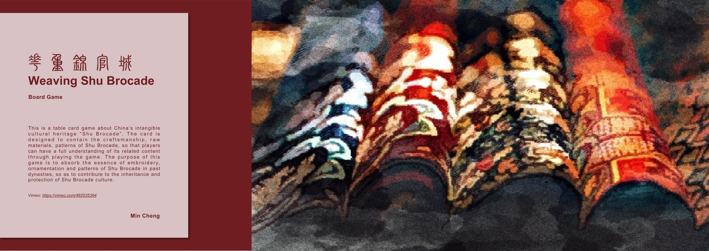
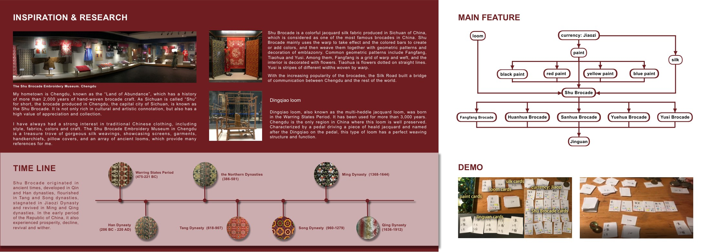
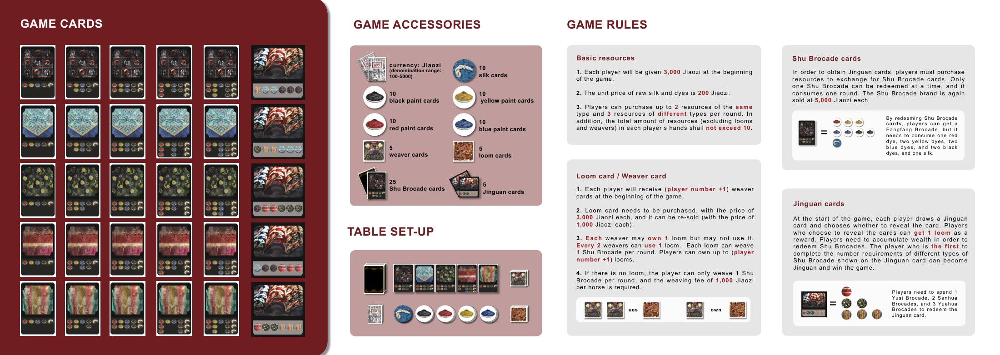
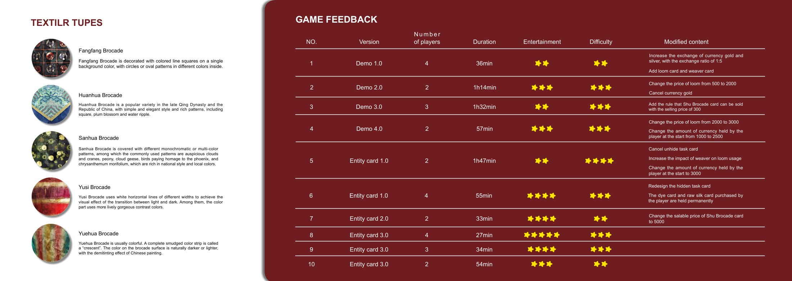
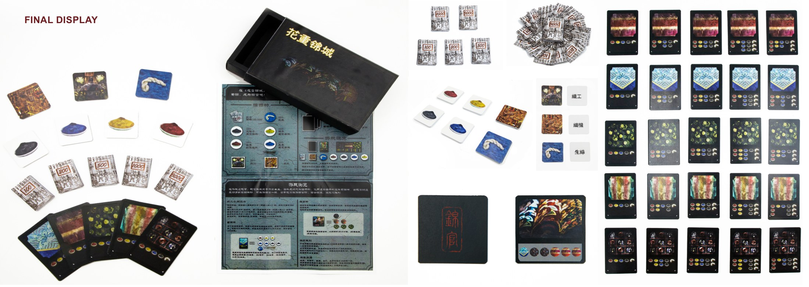

Weaving Shu Brocade
A tabletop card game about Shu brocade, the silk-weaving craft Chengdu has practised for over two thousand years. Players buy dyes and raw silk, weave brocade on their looms, and race to fill a hidden Jinguan commission.
About
This is a tabletop card game about Shu Brocade, one of China's intangible cultural heritages. The cards are designed to carry the craftsmanship, the raw materials and the patterns of the brocade, so that players come to understand the craft by playing rather than by being told about it.
My hometown is Chengdu, the “Land of Abundance”, which has more than two thousand years of hand-woven brocade craft. Sichuan is called “Shu” for short, so the brocade woven in its capital is known as Shu Brocade — rich in cultural and artistic connotation, and highly valued for appreciation and collection.
I have always had a strong interest in traditional Chinese clothing — its silhouettes, fabrics, colours and craft. The Shu Brocade Embroidery Museum in Chengdu is a treasure trove of silk weavings: screens, garments, handkerchiefs, pillow covers and a range of ancient looms, all of which became references for this project.
Design Highlights
- An economy that compounds — players spend Jiaozi on dyes and raw silk, weave those into five kinds of Shu brocade, and trade brocade up for the Jinguan card that wins the game — resources turning into production, then into victory.
- Looms and weavers as a production ceiling — every two weavers can operate one loom, and each loom weaves one brocade per round, so expanding capacity stays a real decision instead of automatic growth.
- A hidden goal you may choose to show — each player draws a Jinguan commission and decides whether to reveal it; revealing trades away the secrecy of your plan in exchange for a free loom.
- Components drawn from the real craft — the five brocade patterns (Fangfang, Huanhua, Sanhua, Yusi, Yuehua), the Dingqiao jacquard loom, and Jiaozi — the world's earliest paper currency, itself from Sichuan — all come from the documented history of the craft.
- Ten logged playtests — balanced across ten recorded sessions from Demo 1.0 through to Entity Card 3.0, each with its change noted; the longest game came down from 1 h 47 to roughly half an hour.
Project Boards




